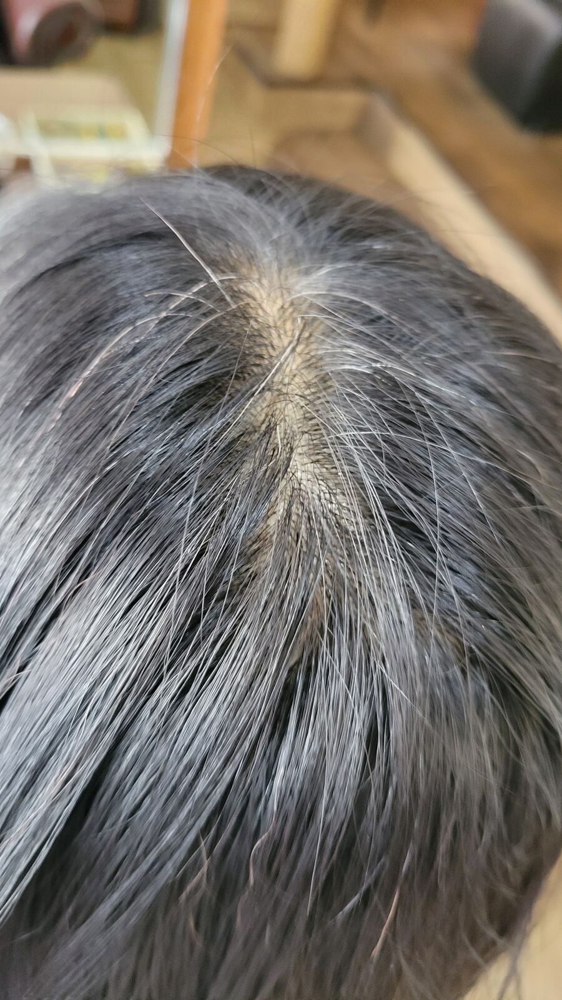
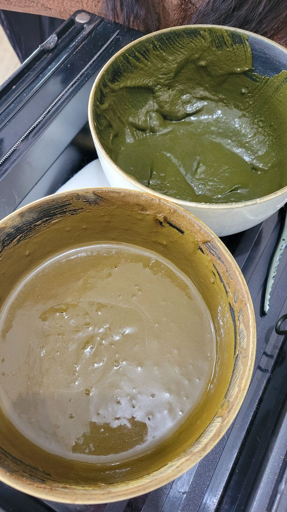
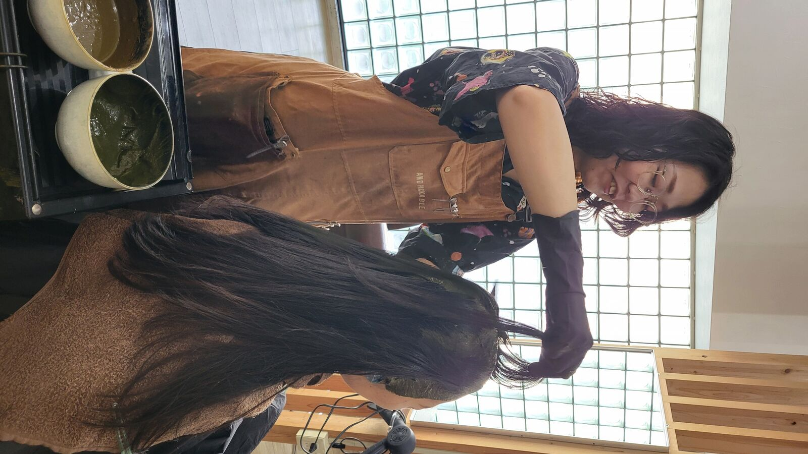
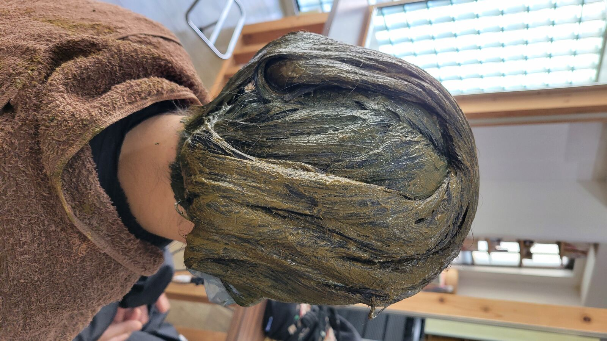
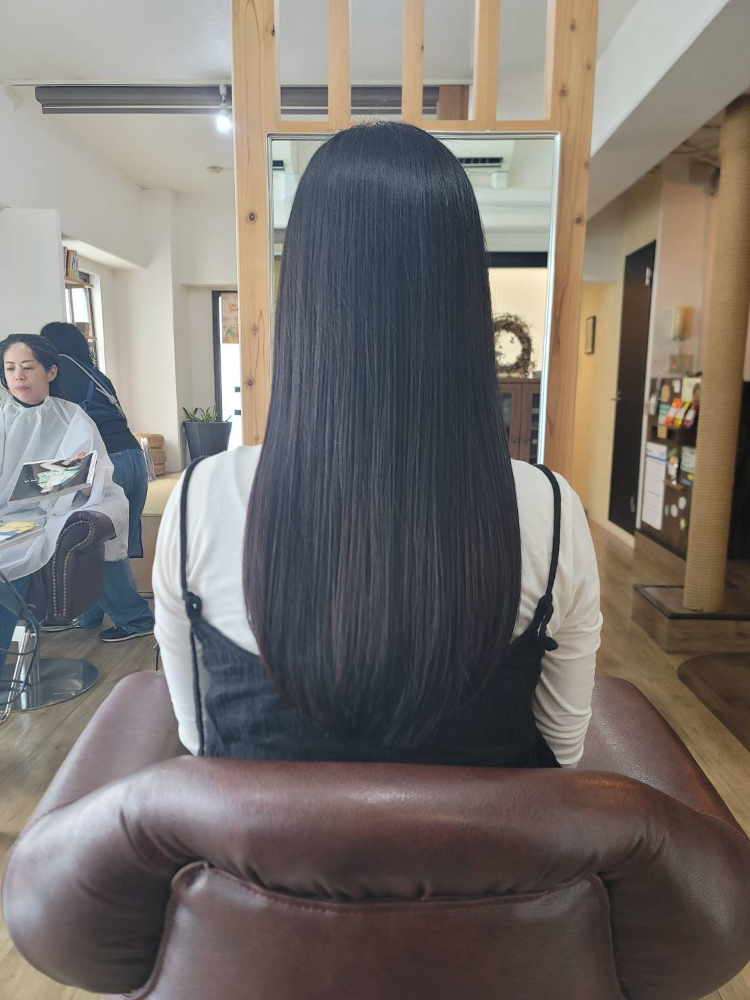
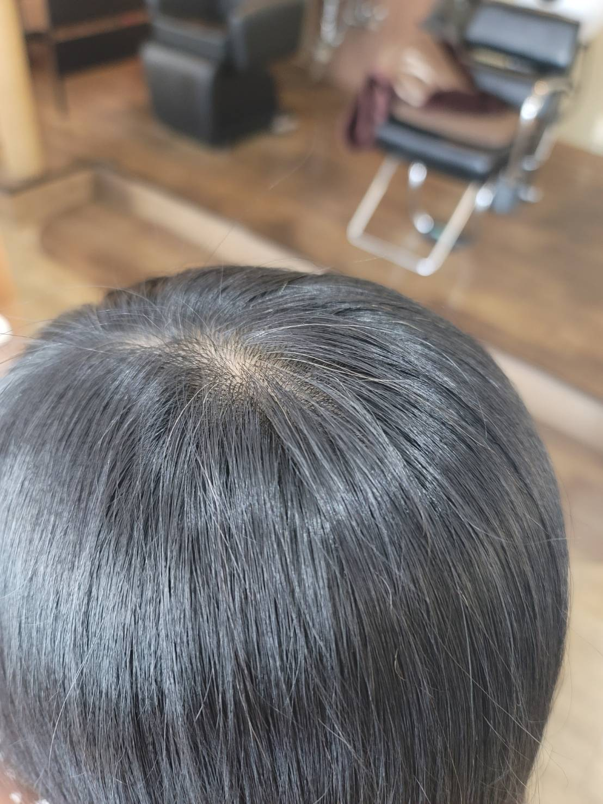

STEP 1 · COUNSELING
カウンセリング
白髪の量・生え際の状態をチェック
まずは分け目や生え際の白髪の量、髪質、頭皮の状態をしっかり確認。お客さまのなりたいイメージや、白髪をどれくらいカバーしたいかをお伺いしながら、ヘナの配合や置き時間をご提案します。

生え際・白髪の状態を確認
STEP 2 · MIXING
ヘナを溶く・配合する
お客さまに合わせてヘナを調合
天然100%のハナヘナを、白髪の量や希望の色味に合わせて配合。写真のように色の異なる2種類を用意し、部分によって使い分けることもあります。お湯の温度や濃さも毎回微調整しています。

お客さまに合わせて配合したヘナペースト
STEP 3 · APPLICATION
塗布
根元から毛先まで、ムラなく丁寧に
スタッフが一束一束、生え際まで丁寧にヘナを塗布していきます。セルフでは塗りにくい後頭部や生え際も、プロの手ならムラなく均一に。頭皮への負担を抑えながら、しっかり色を入れていきます。

スタッフのくるみが丁寧に塗布
STEP 4 · PROCESSING
放置・保温
ラップで包んで、じっくり色を入れる
塗り終わったらラップで包んで保温し、1〜2時間ほど置いて色を定着させます。この待ち時間に、体の中から巡りを整える「ゴッドクリーナー」を同時に受けられるお客さまも多いです。

塗り終えて保温している状態
✦ サロン施術だからできること
- 白髪の量に合わせてヘナの配合・濃さを毎回調整
- 生え際・後頭部までムラのない均一な塗布
- 頭皮への負担を抑えた塗り方・置き時間の管理
- 待ち時間にゴッドクリーナーなど+αのケアも可能
STEP 5 · FINISH
洗い流し・仕上げ
しっかり洗い流して、自然なツヤに
お湯と石けんシャンプーでしっかり洗い流し、ドライ・スタイリングして完成。ヘナは染めながら髪をコーティングするので、白髪をぼかしながら自然なツヤとまとまりのある仕上がりになります。

施術後の仕上がり

生え際は自然にぼかされた仕上がり
MORE
もっと知りたい方へ
料金・所要時間を見る
ハナヘナ・2度染め・ヘナレッスンの料金一覧
おうちヘナのやり方
セルフヘナの手順・塗り方のコツ
ヘナってなに？
ヘナの基礎知識・普通のカラーとの違い